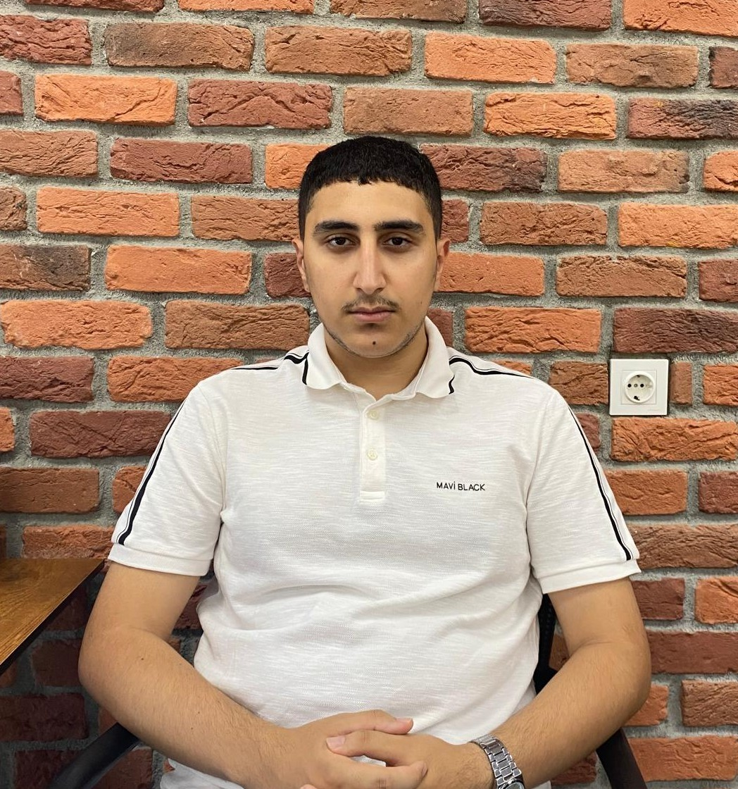

Yazılım Mimarisinde
Profesyonel Çözümler
Yazılımı sadece kod yazmak olarak değil; problemleri çözmenin ve değer yaratmanın bir yolu olarak görüyorum. Modern teknolojilerle sürdürülebilir sistemler inşa ediyorum.
Yazılım Yolculuğum

Ben Onur Kılınç. Yaklaşık 3 yıldır web geliştirme alanında aktif olarak proje üretiyorum. Frontend tarafında modern arayüzler, backend tarafında ise ASP.NET Core ile performanslı mimariler kuruyorum.
Hızlı öğrenen, çözüm odaklı ve temiz kod (Clean Code) prensiplerini benimsemiş bir geliştirici olarak, her projede en iyi kullanıcı deneyimini hedefliyorum.
CV’mi görüntüle